먼저 생각해 보세요.
Als ich nach Köln kam, konnte ich kein Deutsch. 이 문장은 언제의 일을 말하나요?
als는 지나간 때에 한 번 있던 일이나 한 시기를 말할 때 써요.
A2.2 Entdecken · Lektion 8
한 해 돌아보기
음성은 준비 중이에요. 듣기 단추와 받아쓰기는 음성이 올라오면 쓸 수 있어요. 그동안은 글을 읽으면서 공부해요.
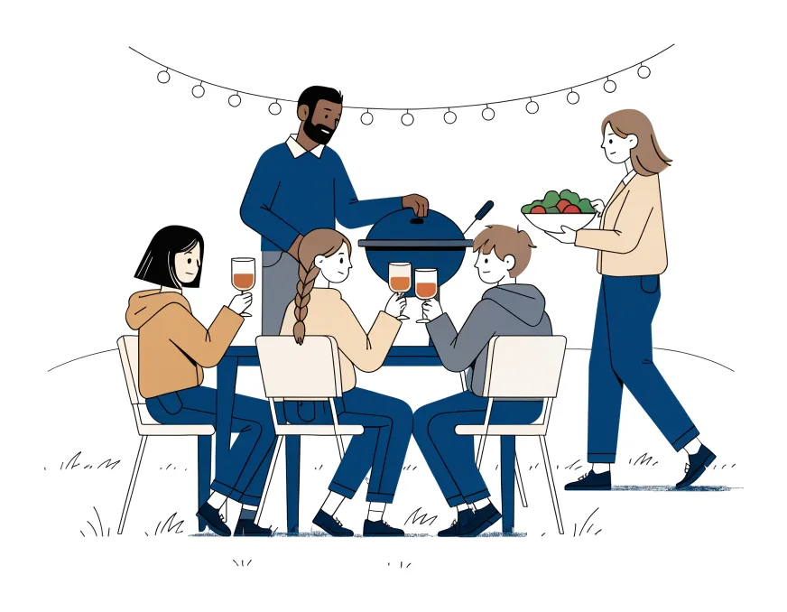
7월 중순, 여름 방학을 시작하는 날이에요. 학교에서 성적표를 받았고, 저녁에는 Wagner 집 정원에서 바비큐를 해요. Yuna가 쾰른에서 보낸 한 해를 돌아보고, 친구들에게 알릴 소식을 꺼내요.
눌러서 들어 보세요.
먼저 생각해 보세요.
Als ich nach Köln kam, konnte ich kein Deutsch. 이 문장은 언제의 일을 말하나요?
als는 지나간 때에 한 번 있던 일이나 한 시기를 말할 때 써요.
Lektion 7의 낱말 다섯 개를 다시 떠올려 보세요.
문법 als und wenn, Präteritum 복습, A2 문법 정리
이 과를 마치면 겪은 일과 달라진 점을 이야기하고, 계획을 말하고, 작별 인사를 할 수 있어요.
방학 전 마지막 날이에요. 성적표를 받고 학교 마당에 모였어요.
들으면서 찾아보세요. Yuna는 독일어 성적을 몇 점 받았나요?
저녁이에요. Wagner 집 정원에서 바비큐를 해요.
들으면서 찾아보세요. Yuna가 알린 소식은 무엇인가요?
두 대화를 듣고 답하세요.
Yuna는 쾰른에 처음 왔을 때 어땠나요?
Lukas und Elif haben Yuna geholfen, wenn sie ein Wort nicht wusste.
Was war ein schöner Tag für Yuna?
Welche Note hat Yuna in Deutsch?
Wann fliegt Yuna nach Korea?
Yuna bleibt für immer in Korea.
Im September komme ich zurück!
Yuna는 방학에 무엇을 할 계획인가요?
낱말 25개예요. 낱말이나 예문 앞의 단추를 누르면 소리가 나요. 명사는 der, die, das를 색으로 구분했어요.
die Erfahrung, die Erfahrungen 경험
Das war eine gute Erfahrung.그건 좋은 경험이었어요.
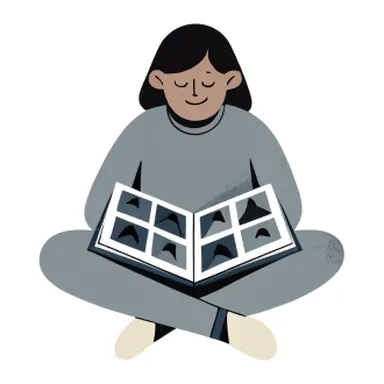
sich erinnern, hat sich erinnert 기억하다
Erinnerst du dich an den ersten Tag?첫날이 기억나?
vergessen (du vergisst, er vergisst) 잊다
Ich vergesse dich nicht.나는 너를 잊지 않을게.
sich verändern, hat sich verändert 달라지다, 변하다
Du hast dich verändert.너 달라졌어.
damals 그때
Damals war ich zwölf.그때 나는 열두 살이었어요.
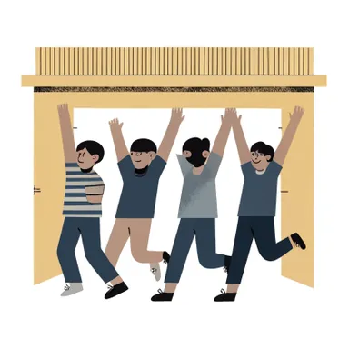
endlich 드디어
Endlich sind Ferien!드디어 방학이에요!
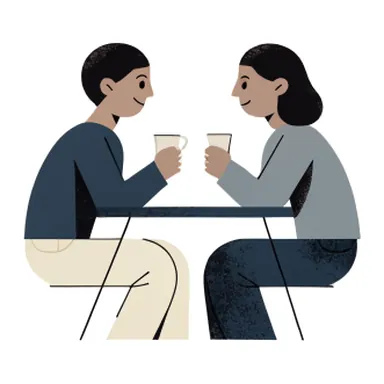
das Gespräch, die Gespräche 대화
Das war ein gutes Gespräch.좋은 대화였어요.
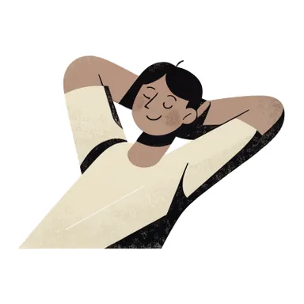
zufrieden 만족한
Ich bin mit dem Zeugnis zufrieden.나는 성적표가 마음에 들어요.
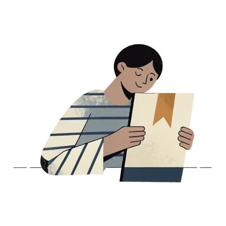
stolz 자랑스러운
Meine Eltern sind stolz auf mich.부모님은 나를 자랑스러워하세요.
manchmal 가끔
Manchmal bin ich müde.나는 가끔 피곤해요.
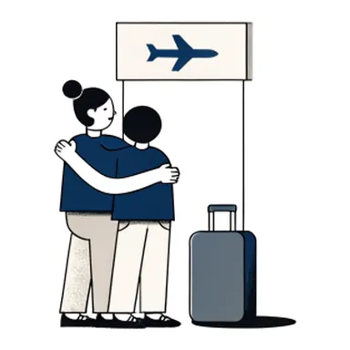
der Abschied 작별
Der Abschied ist schwer.작별은 힘들어요.
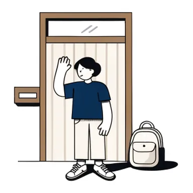
sich verabschieden, hat sich verabschiedet 작별 인사를 하다
Ich verabschiede mich von meinen Freunden.나는 친구들과 작별 인사를 해요.
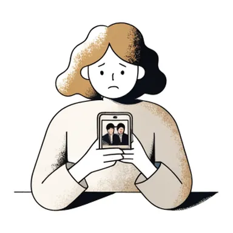
vermissen, hat vermisst 그리워하다, 보고 싶어 하다
Ich vermisse meine Familie.나는 가족이 보고 싶어요.
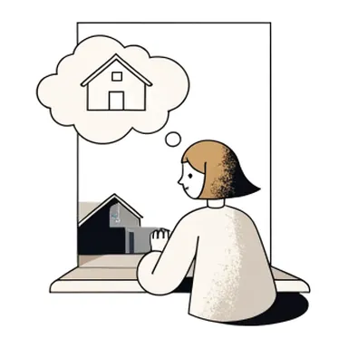
das Heimweh 집 생각, 향수
Im Winter hatte ich Heimweh.겨울에 나는 집 생각이 났어요.
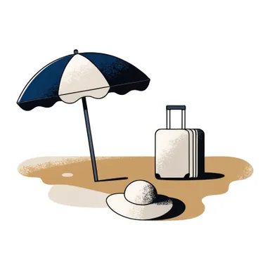
die Sommerferien (Pl.) 여름 방학
Die Sommerferien dauern sechs Wochen.여름 방학은 여섯 주예요.
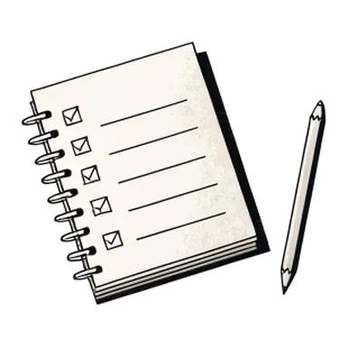
der Plan, die Pläne 계획
Was sind deine Pläne?네 계획은 뭐야?
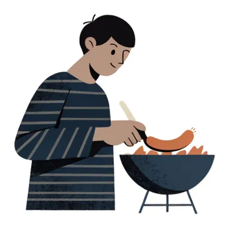
grillen, hat gegrillt 바비큐를 하다, 굽다
Wir grillen im Garten.우리는 정원에서 바비큐를 해요.
bald 곧
Ich komme bald zurück.나는 곧 돌아와요.
wunderschön 아주 아름다운, 정말 좋은
Der Abend war wunderschön.저녁이 정말 좋았어요.
als ~했을 때
Als ich klein war, wohnte ich in Seoul.어렸을 때 나는 서울에 살았어요.
immer wenn ~할 때마다
Immer wenn es regnet, bleibe ich zu Hause.비가 올 때마다 나는 집에 있어요.
Schöne Ferien! 방학 잘 보내!
Schöne Ferien, Lukas!방학 잘 보내, Lukas!
Bis bald! 곧 만나!
Tschüss, bis bald!안녕, 곧 만나!
Danke für alles! 모두 고마워!
Danke für alles, Sabine!모두 고마워요, Sabine!
Viel Glück! 행운을 빌어!
Viel Glück für den Test!시험 잘 봐!
이 과의 낱말로 여덟 문제를 풀어요.
예문을 보고 답해 보세요.
지나간 때에 한 번 있던 일에는 무엇을 쓰나요?
규칙
한국어로는 둘 다 '~할 때'예요. 지나간 때에 한 번 있던 일이나 한 시기에는 als를 써요. 지나간 때에 여러 번 되풀이된 일, 그리고 지금이나 앞으로의 일에는 wenn을 써요. 두 말 모두 동사가 맨 끝에 와요.
| 언제의 일인가요? | 이음말 | 예문 |
|---|---|---|
| 지나간 때, 한 번 | als | Als ich das hörte, war ich glücklich. |
| 지나간 때, 한 시기 | als | Als ich klein war, wohnte ich in Seoul. |
| 지나간 때, 여러 번 | immer wenn | Immer wenn ich zu spät kam, wartete Yuna. |
| 지금, 앞으로 | wenn | Wenn ich zurückkomme, bin ich in der 9b. |
주의 als 문장이 앞에 오면 뒤 문장은 동사로 시작해요. Als ich nach Köln kam, konnte ich kein Deutsch.
예문을 보고 답해 보세요.
als 문장에서 자주 쓰는 과거는 무엇인가요?
규칙
als 문장에서는 Präteritum을 자주 써요. sein, haben, 조동사, wissen은 말할 때도 Präteritum으로 써요. 다른 동사는 말할 때 Perfekt를 써도 돼요.
| 원형 | Präteritum | Perfekt |
|---|---|---|
| sein | war | ist gewesen |
| haben | hatte | hat gehabt |
| kommen | kam | ist gekommen |
| gehen | ging | ist gegangen |
| wissen | wusste | hat gewusst |
| helfen | half | hat geholfen |
| hören | hörte | hat gehört |
주의 du에는 -st를 붙여요. du kamst, du warst, du hattest, du wusstest.
예문을 보고 답해 보세요.
이 문장들에서 동사는 모두 어디에 있나요?
규칙
A2에서는 문장 두 개를 하나로 잇는 말을 여러 가지 배웠어요. 이 말들로 시작하는 문장에서는 동사가 언제나 맨 끝에 와요. A2에서 배운 가장 중요한 규칙이에요.
| 이음말 | 뜻 | 예문 |
|---|---|---|
| weil | ~해서 | Ich lerne Deutsch, weil ich in Köln wohne. |
| dass | ~라고 | Ich finde, dass Köln schön ist. |
| wenn | ~하면, ~할 때 | Wenn ich Zeit habe, schreibe ich dir. |
| ob | ~인지 | Ich weiß nicht, ob er kommt. |
| als | ~했을 때 | Als ich ankam, war es Sommer. |
| der, die, das | ~하는 | Das ist die Stadt, die ich mag. |
| wann, wo, was | 언제, 어디, 무엇 | Weißt du, wann der Zug abfährt? |
주의 이음말 앞에는 쉼표를 찍어요. 쉼표를 보면 '동사는 맨 끝'을 떠올려요.
방학 전 마지막 시간에 Frau Schneider가 인사해요. 듣고 답하세요.
Zum Abschied
Frau Schneider Liebe 8b, das Schuljahr ist zu Ende. Ihr habt viel gelernt und ich bin stolz auf euch.
Frau Schneider Als wir im Sommer angefangen haben, kannten wir Yuna noch nicht. Jetzt gehört sie zu unserer Klasse.
Frau Schneider Am schönsten war für mich die Klassenfahrt nach Berlin.
Frau Schneider Nach den Ferien seid ihr die 9b. Dann machen wir zusammen ein neues Projekt: einen Podcast!
Frau Schneider Ich wünsche euch schöne Ferien. Bis September!
Auf wen ist Frau Schneider stolz?
Was war für Frau Schneider am schönsten?
Nach den Ferien heißt die Klasse 9b.
방학이 끝나면 반에서 무엇을 새로 시작하나요?
듣고 알맞은 것을 고르세요.
Emma는 언제 개를 무서워했나요?
Als ich klein war, hatte ich Angst vor Hunden.
Lukas는 언제 지각하나요?
Immer wenn es regnet, komme ich zu spät.
Elif는 언제 혼자 이스탄불에 갈 수 있나요?
Wenn ich fünfzehn bin, darf ich allein nach Istanbul fliegen.
Yuna는 성적표를 보고 어땠나요?
Als ich das Zeugnis sah, war ich sehr froh.
Yuna가 반 블로그에 쓴 글이에요. 읽고 답하세요.
Mein Jahr in Köln
Als ich im Sommer in die Klasse 8b kam, kannte ich nur Emma. Ich konnte „Guten Tag“ sagen und nicht viel mehr.
Am Anfang war alles neu: die Schule, das Essen, die Sprache. Immer wenn ich etwas nicht verstand, erklärte es mir Emma noch einmal.
Im Winter hatte ich manchmal Heimweh. Aber in den Osterferien kamen meine Eltern und Jun zu Besuch. Das war schön.
Im Mai habe ich mich im Volleyballverein angemeldet. Und im Juni sind wir nach Berlin gefahren.
Jetzt habe ich Freunde, die ich sehr mag. Und ich habe eine Familie in Deutschland.
Im September komme ich zurück. Dann bin ich in der 9b!
Wen kannte Yuna, als sie in die Klasse 8b kam?
Am Anfang konnte Yuna schon gut Deutsch.
Ich konnte „Guten Tag“ sagen und nicht viel mehr.
Wer hat Yuna geholfen, wenn sie etwas nicht verstand?
Wann hatte Yuna manchmal Heimweh?
Yuna는 9월에 어떻게 하나요?
Yuna의 성적표예요. 독일 성적은 1이 가장 좋아요. 보고 답하세요.
Yunas Zeugnis
| Fach | Note |
|---|---|
| Deutsch | 3 |
| Englisch | 2 |
| Mathematik | 1 |
| Sport | 2 |
| Musik | 1 |
| Geschichte | 4 |
In welchen Fächern hat Yuna eine Eins?
Yunas Note in Geschichte ist besser als ihre Note in Deutsch.
독일 성적은 숫자가 작을수록 좋아요. Deutsch는 3, Geschichte는 4예요.
Welche Note hat Yuna in Englisch?
한국어 뜻을 보고 als와 wenn 가운데 알맞은 말을 고르세요.
ich nach Köln kam, konnte ich kein Deutsch.
쾰른에 왔을 때 나는 독일어를 못했어요.
지나간 때에 한 번 있던 일은 als예요.
Immer ich ein Wort nicht wusste, half mir Emma.
내가 낱말을 모를 때마다 Emma가 도와줬어요.
ich in Korea bin, schreibe ich euch.
한국에 가면 너희에게 연락할게요.
ich klein war, hatte ich einen Hund.
어렸을 때 나는 개를 키웠어요.
es regnet, bleibe ich zu Hause.
비가 오면 나는 집에 있어요.
wir in Berlin waren, war das Wetter schön.
우리가 베를린에 있었을 때 날씨가 좋았어요.
지나간 일이에요. 알맞은 모양을 고르세요.
Als ich nach Köln , war es Sommer.
Am Anfang ich fast kein Deutsch.
Emma mir jeden Tag.
Ich viele Wörter nicht.
Wir jeden Morgen zusammen zur Schule.
Im Winter ich manchmal Heimweh.
A2에서 배운 이음말이에요. 한국어 뜻을 보고 알맞은 말을 고르세요.
Ich bleibe noch ein Jahr, es mir hier gefällt.
여기가 마음에 들어서 한 해 더 있어요.
Ich finde, Köln eine schöne Stadt ist.
나는 쾰른이 아름다운 도시라고 생각해요.
Ich weiß noch nicht, ich im Winter nach Korea fliege.
겨울에 한국에 갈지는 아직 몰라요.
Emma ist die Freundin, mir am meisten geholfen hat.
Emma는 나를 가장 많이 도와준 친구예요.
ich zurückkomme, bringe ich euch etwas mit.
돌아올 때 너희한테 뭔가 사 올게요.
ich das Zeugnis sah, war ich froh.
성적표를 봤을 때 나는 기뻤어요.
낱말을 순서대로 눌러 문장을 만드세요.
쾰른에 왔을 때 나는 독일어를 못했어.
비가 올 때마다 나는 집에 있어.
나는 9월에 돌아와.
나는 날마다 독일어를 공부할 계획이야.
낱말과 뜻을 짝지으세요.
듣고 그대로 써 보세요.
음성 준비 중Endlich Ferien! 드디어 방학이다!
음성 준비 중Im September komme ich zurück. 9월에 돌아와.
음성 준비 중Wir sind stolz auf dich. 우리는 네가 자랑스러워.
Als ich nach Köln kam, … 쾰른에 왔을 때 …
Am Anfang war alles neu. 처음에는 모든 게 새로웠어.
Ich erinnere mich gern an … 나는 ~이 즐겁게 기억나.
Mein schönster Tag war … 가장 좋았던 날은 ~였어.
Früher konnte ich kein Deutsch. 예전에는 독일어를 못했어.
Jetzt verstehe ich fast alles. 이제는 거의 다 알아들어.
Ich habe mich verändert. 나는 달라졌어.
In den Ferien habe ich vor, … zu … 방학에 ~할 계획이야.
Nächstes Jahr möchte ich … 내년에는 ~하고 싶어.
Wenn ich zurückkomme, … 돌아오면 …
Schöne Ferien! 방학 잘 보내!
Danke für alles! 모두 고마워!
Ich vermisse euch schon jetzt. 벌써 너희가 보고 싶어.
Bis bald! 곧 만나!
대화 B에서 역할을 하나 고르세요. 상대의 말은 음성으로 나오고, 내 차례에는 직접 말해요.
지난 한 해를 돌아보며 적으세요. 완성된 문장을 소리 내어 읽어 보세요.
Vor einem Jahr konnte ich kein Deutsch sprechen.
Jetzt kann ich einen Film auf Deutsch verstehen.
Am schönsten war die Reise nach Busan.
In den Ferien habe ich vor, jeden Tag ein bisschen Deutsch zu lernen.
Mein Jahr
독일어를 배운 지난 한 해를 돌아보는 글을 써 보세요. 일곱 문장쯤 써요.
Als ich mit Deutsch anfing, konnte ich nur „Hallo“ sagen. Am Anfang war die Aussprache sehr schwer. Immer wenn ich ein Wort nicht wusste, fragte ich meine Lehrerin. Am schönsten war der Tag, als ich meinen ersten Text auf Deutsch geschrieben habe. Jetzt kann ich über meine Familie, meine Hobbys und meine Pläne sprechen. Nächstes Jahr möchte ich mit B1 anfangen.
다 쓴 뒤에 확인해 보세요.
Ich kann über Erfahrungen und Veränderungen sprechen.겪은 일과 달라진 점을 이야기할 수 있어요.
Ich kann über meine Pläne sprechen.내 계획을 말할 수 있어요.
Ich kann mich verabschieden.작별 인사를 할 수 있어요.